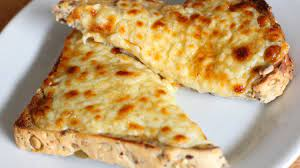

Odin Recipes

Cheese On Toast
A good snack for when you're feeling a bit peckish
Ingredients
- 2 Slices Of Bread
- Cheddar Cheese (sliced)
- Spring Onion
- Worcester Sauce
Steps
- Toast one side of bread under a medium heat grill
- Add onion on untoasted side
- Place cheese on top of onions
- Sprinkle Worcester Sauce on top of cheese
- Grill until cheese is well melted and browned